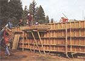

COUNTRY SKILLS
Finished rammed earth homes have the same components (foundations, walls, doors) as any other building. The difference is mass, and plenty of it. With 18-inch to 24-inch-thick walls, rammed earth homes create a level of strength and comfort that can't be duplicated with wood-frame construction. Typically the walls are formed in long horizontal sections, but the wooden forms holding the compacted earth can be modified to build them one small panel at a time. The gap between panels will be filled by a poured concrete post.
Why is the world's oldest form of human shelter malting a comeback? For a start, it's beautiful, inexpensive, durable, highly insulating, and it's raw materials are all around you.
There is a certain magic to living in buildings with thick earth walls. It's hard to describe, but easy to notice. Just take a step inside one on some warm summer day and you'll feel it immediately. It's cool, of course-everyone knows adobe houses are "warm in winter and cool in summer"-but there's something else, too, a little harder to put your finger on. It's quiet and feels somehow incredibly solid and sturdy ...very different from other houses.
Most Americans today have grown up with the idea that a house is a lightweight box with walls built of thin sticks covered on both sides with even thinner skins. The floors and roofs are also built of sticks with equally thin skins. In the past two decades, as our awareness of the value of energy conservation has increased, builders have begun to fill the spaces between the sticks with expanded petroleum-based fibers, but that insulation hasn't done much to eliminate the flimsy nature of the building.
After all, not that long ago, houses used to be built to last for generations. People actually lived in a house long enough to think of it as home. People died in the same house they were born in. Times have changed of course, and in our fast-paced world few of us expect to die in the same city we were born in, let alone the same house. That doesn't mean, however, that we can't still appreciate the special qualities of a house built solidly enough to last for several hundred years.
In the mid-1970s, while searching the Reader's Guide to Periodic Literature for more technical information on adobe construction, I came across a few current references to an alternate earthbuilding method known as "rammed earth:' Further research led to the discovery of a multitude of 30- and 40-year-old references. As it turned out, the rammed earth technique had enjoyed widespread popularity during the first half of the twentieth century. The construction process I read about-moist soil compacted directly into movable formwork yielding immediately loadsupporting walls-seemed almost too simple to be true. No sticky mud, no waiting for the bricks to dry, no mortar to mix, and no bricks to lay-it was an industrial engineer's dream. One-fifth the water, one-quarter the mixing time, onesixtieth the drying time. Could this possibly be? If this technique had all these things going for it, why wasn't it in widespread use?
Twenty years and 500,000 cubic yards of moist soil later, I'm still asking myself the same question: why isn't rammed earth in more widespread use? Without doubt it is a lot of work, as are most things of value in life, but the beautiful simplicity of converting raw, natural earth into human habitat involves a sort of sweaty alchemy. If you attempt to build your own rammed earth house, and if the process works as well for you as it has for me, you'll never regret the effort.
Earth is poured into wooden forms, simple structures which can be as large or small as you wish. Here, the builder has chosen to use large forms covering the whole perimeter.
Planning Your Home
Design criteria for an integrated project must grow out of the site. It goes without saying that architecture should be responsive to the climate of its region-the Cape Cod saltbox and the Texas dog run evolved to suit very different sets of climatic conditions-but working with specific site conditions is equally important to successful design. Where does the sunlight enter the house? When and from where do the winter storms come and the prevailing breezes blow? Does the topography or a great view dictate a preferred spot for the garden, the kitchen, or the living room? How about privacy, road noise, or potential future development? These factors and many others come into play during the development of a site-appropriate design.
The moistened earth can be rammed inside the formwork either quitly with hand tampers, or, as shown here, with pneumatic backfill tampers hosed to air compressors.
You've no doubt asked yourself a few questions already about a home made of soil. "What happens when it rains? ";"How do they stand up over time?"; "How much do they cost?"; and "How good are their insulating properties?" I've wished countless times that I could have had a large sign hovering over me which simply read, "Nothing, well, nothing, not much, and terrific:"
Predictably, the answer to each of these questions is far more involved than that simple statement would indicate. The resistance of the walls to rainfall is a factor of the soil type, the rate of stabilization, the degree of compaction, the amount of protection afforded the wall, the drainage at the base, and the climate. Durability (including earthquake resistance) is dependent upon the strength of the wall, the design of the building, the quality of construction, and the force of the earthquake. The cost of a rammed earth house is affected by the design of the building, the slope and accessibility of the site, the percentage of owner-supplied labor, and the degree of finish work.
Finally, the R-value question is even more complex. Dense materials such as adobe, concrete, stone, brick, and rammed earth have R-values roughly equivalent to .25 per inch. In other words, an 18-inchthick earthwall would appear to have a total R-value of only 4.5-far from adequate to meet today's strict performance standards, even in mild climates, where R-11 is the minimum wall insulation. If this is true, how can it be that an adobe house feels "warm in winter and cool in summer;" as it is so often reported?
There are a few reasons for the exceptional performance of thermal-mass buildings despite the low per-inch R-value of the wall components. First (and most easily documented) is the heat capacity of the mass itself, known as the K-value. Rather than resisting the flow of energy from outside to inside, as an insulated wall does, a mass wall stores heat energy for return to the living spaces as it is needed.
The second is due to the effect that heat transfer through radiation has on our bodies. When we stand, sit, or walk near a mass wall, the energy in the wall will cause direct sensations of warmth or coolness, regardless of the temperature of the air in the room. Direct radiant energy provides a soothing, subtle, and effective alternative to forced-air heat and mechanical air conditioning.
In very cold regions, an exposed, uninsulated wall will become cold even with a supply of warm air on the interior surface. The cold walls will "wick" heat out of the living spaces, adding to the fuel bills as energy is expended in an attempt to offset the heat loss. Despite warm air temperatures, the walls will also create the sensation of cold through a constant radiant heat loss between the occupants and the wall mass. In these situations, insulation, either embedded within the wall or applied to the outside surface of the walls and protected with stucco or paneling, is economically justifiable.
At the lower left is a rambling, large-scale project.
In mild climate zones, but where some winter protection is helpful, it might make sense to explore alternatives to insulation, especially if an uninsulated wall can work to your advantage in maintaining cool temperatures during a long, hot summer. Some of these alternatives might involve altering your design to provide greater solar access if winter heat is your predominant re quirement, or adding a wide porch if summer cooling is the higher priority.
If your winters are cold but short and sunny, perhaps the most feasible alternative would be the addition of solar panels to heat water for circulation through the floor slab, thereby offsetting the heat loss through the walls with inexpensive heat gain. If the summers are hot and dry, consider installing a nighttime evaporative cooler to force-ventilate the house and chill down the walls.
If you live on rural property, try stacking bales of hay or straw against the north side of the house during the cold winter months, then using the straw for summer mulch on the garden. Whether you rely on an attached greenhouse or an annual straw-bale blanket, there are a wide variety of alternatives worth evaluating before buying into synthetic insulation and stucco protection. Even in the coldest of climates, you might decide to build your house without exterior insulation and test how well it performs for a year or two. You can always add the insulation and stucco later if the heating bills are too high.
After the formwork has been filled with compacted earth, the form panels are removed and reset for another section of wall
After the formwork has been filled with compacted earth, the form panels are re moved and reset for another section of wall. Unlike concrete, the forms need not remain on while the material cures.
Water, Water...
Moisture is the lifeblood of the soil, but it can wreak havoc if the building and the site aren't prepared for a deluge. Lowlying building sites are, of course, subject to flooding. Driveways and
pathways above a house may channel water into a doorway. Wind-driven rain can beat against window frames with enough force to creep around the sash. Saturated earth walls tend to lose their thermal efficiency and may become subject to accelerated surface weathering. Depending on the amount of annual rainfall in the region, water-related issues may play a very big part in the siteselection and design processes.
Where winter rains are extremely heavy, great care must be taken to assure rapid runoff away from the building. If positive control systems are not installed, water may back up against foundations and floor slabs, eventually migrating underneath the structure and generating unhealthy conditions in the house, or possible settling of the foundation walls.
These oversized columns support wooden trellises providing seasonal shade to a southern patio. The first and most important line of defense against groundwater damage is careful siting of the house. Study the land for signs of water flows. Avoid sites that are clearly water drainages.
Picturesque riverbeds, today a peaceful habitat for rabbits and quail, was originally gouged out of the land by water.
The water will come again. The second line of defense against water-related problems is the finish grading around the building. Ground should always slope away from the house on all sides so that water will run away quickly from the building and never toward it.
If water is allowed to back up against the walls, it will eventually work its way into the house. In some cases water can build up enough pressure to actually dislodge a building from its foundation. Drain lines can be buried at the base of the walls as additional diversionary measures, but surface drainage is always critical. Lastly, take special precautions to ensure that neither driveways nor walkways create natural watercourses leading toward the doors.
Even a little footpath can become a streambed after a downpour. The third level of protection, which like grading relates more to construction than to the selection process, is the team of roof overhangs, gutters, downspouts, and underground drain lines. In high rainfall or snowfall areas, overhangs and gutters are absolutely essential. Where the soil is heavy or drainage poor, use underground lines to carry the water from the roof away from the building.
Foundations
One of the beauties of rammed earth is that as soon as the walls are set, the roof, whether manufactured trusses, hand-cut timbers, or round vigas, can be set immediately. Overnight the building begins to take on a sense of completion, and work on surfacing the roof can begin immediately.
The simplest and least expensive of foundation systems involves nothing more than locking the base
of the wall into the earth, essentially beginning the construction of the wall a certain distance below grade. This approach works only in cases where either the climate is very dry or the wall material is not subject to deterioration from contact with moisture or soil organisms. Also, the ground under the wall must be firm enough to resist differential settling.
A more traditional and permanent system involves the excavation of a trench somewhat wider than the wall and deep enough to extend below the depth of winter freezing. The trench is then filled with a matrix of large and small stones, to achieve good weight distribution, and the wall built on top.
In masonry construction, whether block or mortared stone, the irregular surface on top of the stone foundation results in a strong mechanical bond with the wall, an important consideration in seismic areas. A variation on the rock foundation, which has been used effectively in many applications, is the "rubble-filled" trench with a poured-in-place concrete grade beam on top. The "rubble," normally gravel, road base, or crushed stone, uniformly distributes the weight of the walls over the full width of the trench. The concrete grade beam ties the wall system together at its base and makes the required strong connection between the walls and the footing. Where groundwater is significant or winter freezes severe, drain lines should be installed at the bottom of the trench and the water diverted either to daylight or to dry wells.
The concrete beam should be poured high enough to lift the base of the walls above the surrounding ground to protect them against saturation. In areas where the ground freezes during the winter, the rock-filled trench type of foundation can yield major savings in both labor and materials. When wet soil freezes, it expands with enough force to lift even a heavy building. If moisture is allowed to accumulate underneath a foundation, and that saturated soil then freezes, serious structural damage can result. The greater the frost depth, the deeper the foundation must extend into the ground to be certain no freezing occurs underneath it.
In some parts of the world, the frost depth is eight feet or more. Compare the cost of filling a nine-foot trench with cracked rock to the expense of pouring concrete footings nine feet into the ground and then constructing an eight-foot-high water-impervious wall merely to bring the building to the point of starting the actual house walls! The most common foundations today are built of reinforced, poured-in-place concrete. A concrete foundation typically is comprised of two parts: the spread footing and the stem wall. The footing distributes the weight of the building onto the earth below grade. The stem connects the walls of the building to the footing. The width of the footing is a factor of the loadbearing capacity of the soil on which the building is anchored.
In very strong soils, the footing may be no wider than the wall itself, while in very weak soils, the footing may be twice or even three times as wide as the wall. Standard engineering guidelines assume soil strengths in the weak range, from 1,000 to 1,500 pounds per square foot (psf) bearing capacity On the other hand, site investigations and testing by certified geologists may discover soil strengths on the order of 2,500 psf or greater. A significantly stronger soil, one that could justify narrower footing widths, allows you to pour narrower footings, thus saving money on concrete costs. Soils reports can be expensive, however, so before contracting with a geologist, try to determine the potential savings in concrete you could expect.
Obviously, the larger the project, the greater the savings. The footing can either be poured separately or in conjunction with the stem wall. Where frost depths require a deep footing, it is simpler to excavate the trench to the precise width designated by the engineering design, install the required reinforcing steel, and then pour concrete to the specified thickness directly into the trench. Form boards or form panels can then be set on top of the spread footing to the dimensions specified in the engineering. Where footings are more shallow, it may be possible to complete the whole foundation system in only one concrete pour. In this case, forms for the stem wall are suspended above the footing trench on stakes which are pulled before the concrete in the footing has fully set.
Both the spread footing and the stem wall require horizontal reinforcing steel tied continuously around the perimeter of the building. Typically, three 1/2-inch rebar are spaced evenly across the bottom of the footing trench, and two 1/2-inch rebar are suspended three inches from the top of the stem wall. Intermediate horizontal courses of reinforcing steel are required if the distance between the top and bottom steel exceeds 18 inches. Unless engineering design or special seismic considerations warrant it, vertical reinforcing does not extend above the top of the stem wall.
The strength of the connection between the earth walls and the concrete foundation is a result of both mechanical bonding and the weight of the wall. To improve the mechanical bond between the base of the walls and the top of the stem, the concrete should be left very rough after it is poured. The deformations in the concrete serve as a field of mini-keyways into which the earth is locked as it is compacted. Where earthquakes are a hazard, the tops of the walls are tied together with a bond beam, poured directly on top of the earth using the formwork. Below we see concrete flowing from the grout pump and a finisher using a vibrator to ensure consolidation.
The Art of Formbuilding
Formwork is a major part of building with rammed earth. In fad, the time spent setting, aligning, and stripping the forms is usually greater than the time spent transporting and compacting the earth within the forms. For this reason, the efficiency of the forming system is key to the quality and affordability of building with rammed earth
. Building with rammed earth is a little like making adobe bricks, except the forms are larger, the earth is drier, and the bricks never moved. Sundried adobe bricks are poured into molds set on the ground, left to cure, then laid up into a wall with mortar. Rammed earth is pounded into forms set in place on the foundation. Once the form is full, it is moved to a new position along the wall.
The blocks of earth are never moved, nor is any mortar required to bind them together. The force of ramming provides the bond between adjacent sections of wall. The traditional approach to building rammed earth has been used on every continent except Antarctica and has remained essentially unchanged for 2,000 years or more. The perimeter walls of the building are defined on the ground, either by constructing some type of foundation or by marking a line in the dirt. The two form panels and two endboards are erected at some chosen starting point along the building line. Layers of moist soil are then placed into the formwork and compacted until the form is full.
Once full, it is disassembled and repositioned along the building line, one end clamped against the section just completed, the other end closed off with an endboard. This process is continued around the perimeter of the building to complete the first level (course) of wall sections. The formwork is then lifted to rest on top of the first course and the process continued around the perimeter a second time, followed by a third, a fourt-has many passes as necessary to obtain the desired wall height. Each successive circumnavigation around the building results in raising the walls approximately two feet. The higher the walls, the more difficult setting the formwork becomes and the greater the inaccuracies in plumb and line. Advances in forming technology have increased the efficiency and quality with which rammed earth walls can be built. Today, with the help of front-loading tractors, pneumatic tampers, and welldesigned formwork, earth walls can be built in a fraction of the time it used to take.
Under good conditions it is possible for a crew of four men to complete 300 square feet of wall per day, compared to the 40 or 50 square feet per day for a fourman crew working with hand tampers and baskets. The form panels we use in our work are typically 4' x 8' or 4' x 10' sheets of HDO (high-density overlay) plywood with no permanently attached supporting frame. Form ties are 3/4-inch pipe clamps spaced between 6 and 10 feet apart in the horizontal direction and 15 to 24 inches apart in the vertical direction. The distance between pipe clamps is spanned by 2" x 10" or 2" x 12" wooden planks (called walers in forming language). The walers used in forming concrete are typically 2" x 4", with ties spaced 2 feet apart. It is the extra width of the walers in our system that allows for the wide spacing of the form ties; and it is the wide spacing of the form ties that reduces the work of compacting the soil with the heavy backfill tampers.
Once erected, the formwork presents a big open box into which workers can compact as much as 8 1/2 cubic yards of prepared soil without stopping. Corners are more difficult to form than straight sections of wall. The forces from ramming are compounded at the far out side corner of the formwork, and it demands extra precaution to keep a corner straight and the formwork tight. In fact, corners present such significant headaches that frequently rammed earth buildings are designed without earth corners altogether. That is, either door openings or full-height windows are positioned to butt against straight wall sections at the building's corners or else side walls extend beyond the ends of the building and the cross walls butt. (Viewed in a plan, this configuration is in the shape of a T.)
Building the Walls
Constructing a complete wall system using the basic formwork is simply a matter of building one panel after another around the perimeter of the building, discontinued at door openings and partial height at window locations. The first step, regardless of which method is used (freestanding or panel-to-panel), is to construct the corners. This way, the correct alignment of the walls can be maintained. String lines can be used to check alignment as each new form is set. If concrete columns are specified in the design, each panel is spaced six inches from its neighbor. Where doors are to be installed, a panel is omitted, and where windows are to be installed, a partialheight panel is built. The simplest system calls for the door and window openings to extend to the height of the bond beam, thus eliminating the need for separate lintels. (More on doors and windows later.) In the panel-to-panel system, where no concrete columns are used, wall sections are rammed directly against one another, end to end.
When building this system, we first mark out on the foundation the exact position of each of the wall sections. Door and window rough openings are calculated and marked out directly on the foundation. The mark actually specifies the positioning of the endboard for each setup. With all the sections laid out, first build the corners to provide a point of alignment for the walls, then form and construct every other panel around the perimeter, leaving a full-panel gap between each section.
The reason for the gap is that freshly constructed sections of wall are fragile, and when forms are clamped onto green walls there is a risk of cracking and other damage. By first making a complete circuit around the perimeter, building every other section, the walls will have enough time to cure, so that, when the intermediate panels are built, the seam between the two will be clean and straight.
The Essential Soil
Soil is classified by the size of its individual particles, not by its parent rock. Generally speaking, there are five basic soil types: gravel, sand, silt, clay, and organic. The five soil types are rarely found separately in nature.
Rather, various combinations of particle sizes blend together over time to create soil mixtures: silty sand, clayish gravel, sandy gravel, etc. Which soil to use in constructing a rammed earth wall is a matter of availability, economics, and climate. Some soils, of course, are far more suitable than others.
The logical point to begin our research into which soils are best suited for building new rammed earth walls is to look at old walls. What is the typical composition of the soil that was used to construct walls that have survived for a century or more? It turns out that most of the world's oldest rammed earth walls were constructed with basically the same soil composition - roughly 70 percent sand and 30 percent clay. Need we look further? The answer, unfortunately, is yes we do. Most of the world's soil is not composed of 70 percent sand and 30 percent clay. In fact, soil varies enormously from region to region, even from one side of the valley to the other, and from the top of the hill to the bottom. Finding a suitable soil right beneath the spot on which you have chosen to build your house is like finding money buried there.
The reality is most of the soils we have encountered in our work are too high in clay content to be used as they naturally occur. Hence the need to understand the range of suitable soils and the means to amend those soils that are less than ideal. Prior to commencing a project of any significant size, test samples of the proposed mix design must be evaluated either by a laboratory or by your own field methods. The results of this preconstruction testing will determine the percentages of stabilizer and amendments to be used on the job. When both water and cement are being added to a soil, thorough mixing of the ingredients before they are compacted in the forms becomes critical.
A wall is, in fact, not much stronger than its weakest sections, and, when a soil is inadequately mixed, the advantages of adding cement are significantly lessened. Based on numerous observations in the field as well as laboratory testing, it appears that mixing, even beyond the point of visual homogeneity, plays a crucial role in obtaining the maximum strength attainable for any given soil formula. The fine particles of cement need time and agitation to incorporate themselves within the other fine-particle matrix of the clay-based soil. We have found that perfectly adequate and affordable mixing can be accomplished by using a rototiller mounted on the back of a tractor, affordable, that is, assuming that a tractor is already part of your wallbuilding equipment. When either borrowing or renting a tractor isn't in the budget, rammed earth can be built using wheelbarrows and five-gallon buckets, and a garden tiller can substitute for the tractormounted type.
Just remember, it will take a lot longer. For speed and efficiency, the tractor is an important part of the overall success of the project. During the mixing process, in order to maintain uniformity of color throughout a wall panel, it is advisable (though not essential) to make batches of mix that are big enough to fill the wall form you have set up. In other words, if you are building a panel that is 8 feet long, 7 feet high, and 18 inches thick, the total volume inside the form is a little over 3 cubic yards (8 x 7 x 1.5 / 27). Since most soils can be compressed to about 60 percent of their uncompacted volume, you'll need about 5 cubic yards of loose mix to fill this particular form. Different soils have different "bulking" factors. A bulking factor is basically the amount of air that is trapped inside a pile before it has been compacted to maximum density. Sands and gravels, soils which have low expansion/contraction ratios, will compact less than a "fluffy" clay-rich soil.
You'll need to experiment to learn the ratio of loose volume to compacted volume for the soil being used on any given project. Calculating the amount of cement to add to the pile is based on the compacted volume of earth, not the loose volume. For example, the form panel we have set up has a volume of 84 cubic feet (8 x 7 x 1.5), or 3.1 cubic yards. Let's say the minimum adequate rate of stabilization determined from our preconstruction testing is 7.5 percent. Then by simple mathematics we know that the number of sacks that should be added to the mix pile is 6.3 (84 x 0.075 = 6.3). Each sack of cement is exactly one cubic foot. Regardless of how "bulky" the loose soil is, once it is fully compacted in the form it will have a volume of 84 cubic feet. Six and one-third sacks of cement will combine with that 84 cubic feet of soil, yielding the desired stabilization ratio of 7.5 percent.
Once you have determined the moisture content of the mix to be "just right," it is important to transport the stabilized earth to the formwork and accomplish the layering and compacting as quickly as possible. The cement in the mix will begin to hydrate as soon as water is added. It will start to absorb the moisture in the soil and, if not used in a relatively short period of time, this process will dry out the mix significantly enough to affect the compaction. How much time you actually have varies depending on the weather. If it's cool and cloudy, the mix will keep for a few hours. On the other hand, when it's hot and windy, the mix can become too dry after only one hour.
If this is the case, you may even need to sprinkle and turn the pile several times as the wall panel is being constructed. You'll just have to keep your eye on the mix as you're building panels. Soils vary in how quickly they give up their moisture to the cement.
Ramming the Earth
Think of rammed earth as a sort of "instant rock." The natural process of creating sedimentary rock occurs over a span of thousands and millions of years. An earth rammer, on the other hand, creates it in a matter of minutes.
The historically proven tool for compacting soil is the hand tamper, a heavy block of wood fitted with a pole for a handle. Slow and tedious, tamping by hand is nevertheless extremely effective. Millions of yards of earth, on six continents, have been rammed into stone under the repeated blows of a hand tamper. The average rate of production for a crew building rammed earth by hand, as documented in several older publications, is 1 1/2 cubic feet of wall per man per hour.
A good hand tamper can be made with a 4" x 4" x 5/16" steel plate welded to a sixfoot-long piece of one-inch steel pipe. This results in a tool with sufficient weight for achieving good compaction, while still light enough to operate for long periods of time without tiring the arms. The one-inch diameter of the pipe fits well into the hands.
For our work in the United States, we always use mechanical tamping equipment, powered by compressed air. The hand tampers are only used in tight spaces and around the plumbing fitting and electrical boxes. On a large project, we'll have four to six 30-pound pneumatic rammers in operation, all hosed to a 120 cubic feet per minute (cfm) air compressor.
The compaction process begins at the bottom of the form box, on a four- to sixinch layer of prepared soil mix. When tamping by hand, stand in the form box and first settle the soil with your feet. Lift the tamper about 12 to 18 inches high and let it drop. Begin at one end of the form and work your way along from side to side.
Two or more people in the form-as many as can fit comfortably, in fact-will improve the rate of production. The rhythm of a team effort yields a psychological boost to the work. Lift and drop. Lift and drop. As the soil becomes compacted, the sound of the tamping will change from a dull thud to a ringing sound. When the layer rings, it's time for more earth.
Once a soil layer has been completely compacted, shovel in another four to six inches and repeat the tamping ritual. Place layer upon layer until the form is full and the top layer is hard. Because each of the layers benefits from the forces applied to it by the ramming of the layer above, you'll need to take twice as much time compacting the top layer as you did the others.
The above procedure for building a wall section, as you might guess, results in a "layered" look. Once the forms are stripped, the wall will display very visible horizontal lines between each of the courses, like sedimentary rock. The more level and consistent each of the loose courses are, the more uniform the layers in the finished wall. This layering is the traditional look of rammed earth. If desired, it can even be accentuated by increasing the thickness of each layer, from six inches of loose material to eight.
Whatever method of ramming you choose to use for your projects-buckets and hand tampers, thick layers and pneumatics, or continuous delivery-the results are structurally the same. If the soil has been selected carefully, moistened properly, and well compacted within the formwork, rammed earth walls become like stone. Believe it or not, like stone, the home becomes stronger with age ...which will be a comforting fact to your greatgreatgrandchildren as they stoke up the fire in the home you built so long ago.
The above article was adapted from: The Rammed Earth House (Chelsea Green, 1996) by David Easton. Copyright © 1996 by David Easton. David's comprehensive guide is available for $30.00 through MOTHERS Bookshelf (see pages 88 and 89) by calling 1-800-888-9098 and asking for product number MEB234.
|
Earth is poured into wooden forms, simple structures which can be as large or small as you wish. Here, the builder has chosen to use large forms covering the whole perimeter |
The moistened earth can be rammed inside the formwork either quitly with hand tampers, or, as shown here, with pneumatic backfill tampers hosed to air compressors |
 Above Left: A perimeter concrete foundation supports the walls, as plumbing and electrical supply lines enter and exit the building where needed. Steel reinforcing bars extend from the foundation as structural earthquake insurance. Above Right: A completed wall panel resting on foundation. |
|
Designed and built entirely by the owners, the structures are free to grow out of, and into, the landscape, and it can be as simple or as complicated as you wish. |
One of the beauties of rammed earth is that as soon as the walls are set, the roof, whether manufactured trusses, hand-cut timbers, or round vigas, can be set immediately |
Where earthquakes are a hazard, the tops of the walls are tied together with a bond beam, poured directly on top of the earth using the formwork. Below we see concrete flowing from the grout pump and a finisher using a vibrator to ensure consolidation. |
|
|
|
|
|
|
|
|